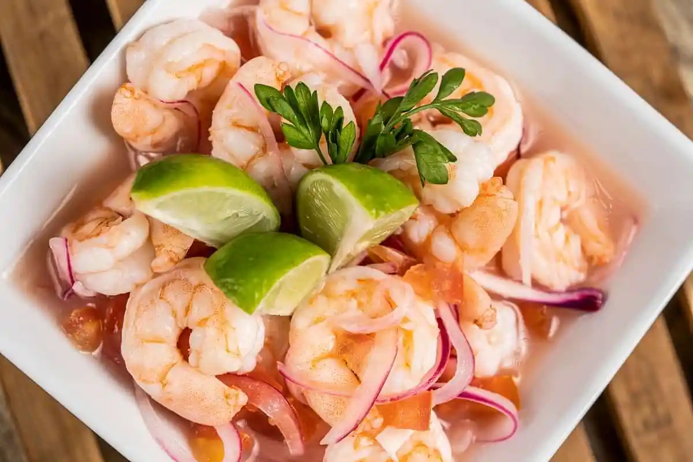
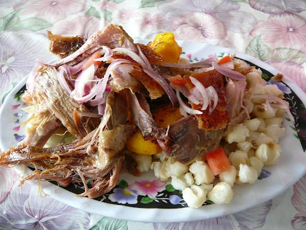

Introducción
La comida ecuatoriana se caracteriza por su gran diversidad de platos típicos que varían según cada región del país. Desde la Sierra hasta la Costa, la Amazonía y las Islas Galápagos, Ecuador ofrece un repertorio culinario único que combina ingredientes locales con tradiciones ancestrales.

Ceviche
Mariscos con limón y chifles o maíz tostado.

Encebollado
Sopa de pescado con yuca y limón, típica de la Costa.

Bolón de Verde
Plátano verde con queso o chicharrón, típico desayuno.

Hornado
Cerdo al horno servido con mote y ensalada.